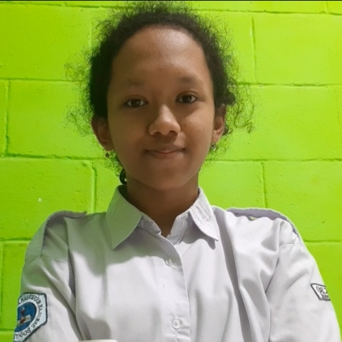

| Data Diri | Keterangan | Foto |
|---|---|---|
| Nama | Oui Kurnia Morwarin |  |
| Sekolah | SMK- SMAK Bogor | |
| Kelas | XI-6 | |
| Tempat/Tanggal Lahir | Sukabumi, 22 Oktober 2004 | |
| Hobi | Menggambar |
Awalnya saya mengira bahwa sekolah diliburkan selama satu minggu karena adanya ujian sekolah bagi siswa kelas 12. Ternyata, setelahnya sekolah harus diliburkan selama waktu yang tidak ditentukan, lebih tepatnya melakukan pembelajaran dari rumah untuk mencegah penyebaran virus Corona. Pembelajaran dari rumah ini tentunya adalah pengalaman yang baru. Bagi saya, pembelajaran dari rumah menyenangkan dan membosankan disaat yang bersamaan. Menyenangkan karena saya tidak perlu bangun tidur terlalu pagi serta mata pelajaran per harinya tidak sebanyak saat sekolah offline dan membosankan karena saya terus- menerus menatap layar, apalagi jika melakukan pertemuan melalui zoom diwajibkan menyalakan kamera membuat saya kelelahan.
Pembelajaran dari rumah juga tidak selalu berjalan dengan baik. Terkadang saat sedang melakukan pertemuan melalui zoom, jaringan saya tidak stabil. Pernah sekali jaringan saya buruk saat saya sedang presentasi sehingga teman saya perlu mengambil alih materi yang saya bawakan. Selain karena jaringan, pemadaman listrik juga menjadi kendala, karena jaringan saya bisa ikut memburuk juga dan device yang saya gunakan kehabisan daya. Walaupun begitu, saya tetap berusaha mengikuti pembelajaran semaksimal mungkin. Walaupun rasanya berat dan melelahkan, tidak terasa jika saya telah melakukan pembelajaran dari rumah nyaris selama setahun. Terima kasih kepada guru- guru yang telah mengajar serta memotivasi saya, teman- teman yang membantu serta memberi semangat dan tentunya terima kasih kepada saya yang berhasil berjuang melewatinya.